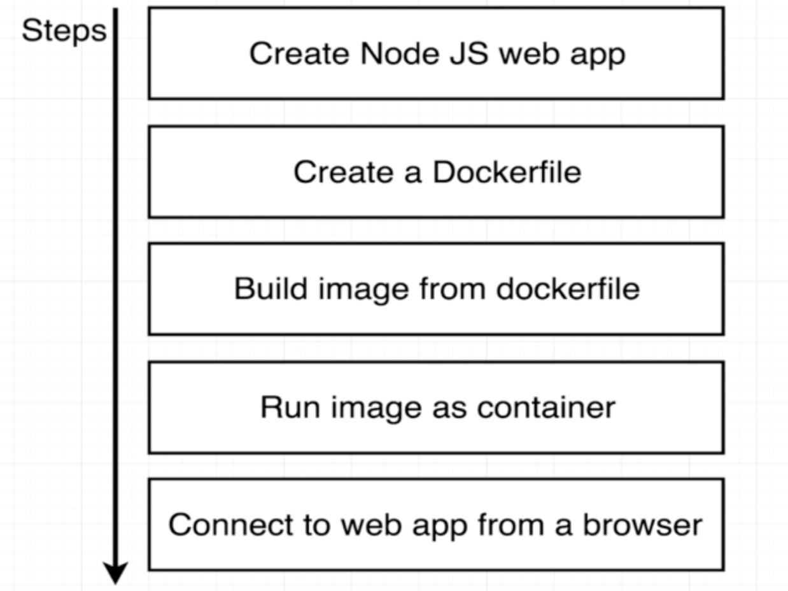
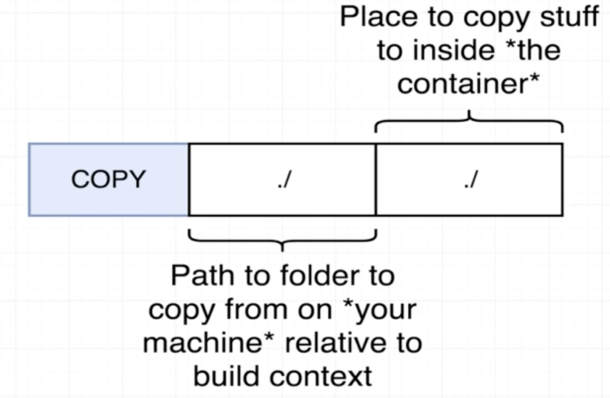

Project Outline
- create mini Node.js Web App
- wrap inside docker container
- run it on local machine

How to pass file to the image

How to achieve container port mapping
WebApp is listening on port 8080. However when running container, we cannot get the message through localhost:8080. Port mapping to achieve redirect into container port 8080.
docker run -p <localhost/source machine port>:<container port> <image name>
How to specify a working directory
WORKDIR /usr/app any following command will be executed relative to this path in container.
How to avoid re-install dependencies if we just amend some of the code
Docker is sequence sensitive. COPY dependencies first, making dependencies to be installed first, then other files. Therefore, during rebuild the dependencies can used directly from cache instead of installing from scratch.